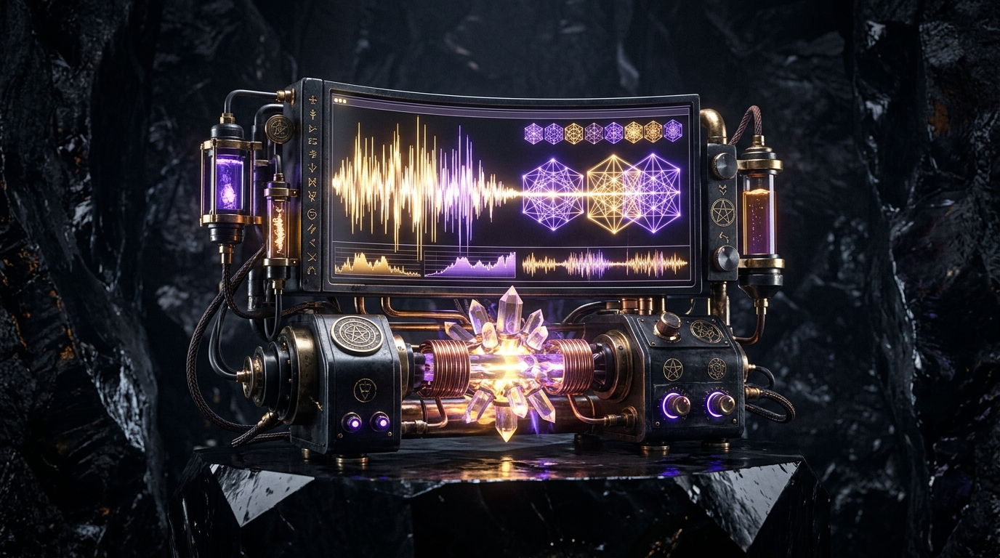

Measure how ungrounded interruptions warp cognitive time geometry. Convert wasted hours into reproducible integer impact claims ($I = H \times R \times S \times F \times E$) and permanent $VTIME burns on Polygon PoS.
Ungrounded interruptions cause non-linear cognitive friction. Here is how noise expands time spacetime geometry.
A 15-minute ungrounded interruption requires 75 minutes of cognitive recovery context switching. Total spacetime distortion: 90 Minutes (1.5 Hours).
Separates high-entropy opinion from evidence-backed engineering. Low-evidence claims carry a reduced 0.25 confidence multiplier under published BPS rules.
Executes an on-chain $VTIME burn (50% burn / 50% treasury reserve) to issue a permanent, non-custodial experience receipt on Polygon PoS.
"As above, so below; as within, so without." Converts chaotic sound decibels into structured sacred crystal geometry.

Formula: Impact Score = Hours (H) × Rate (R) × Severity (S) × Recurrence (F) × Evidence Confidence (E)
* Reference impact score represents evidence-weighted points evaluated in Rust u64 integer BPS, NOT an objective price on a human being.
Click any visual asset to inspect SHA-256 evidence seals, download watermarked assets, or attach to an impact record.
{kind=link}